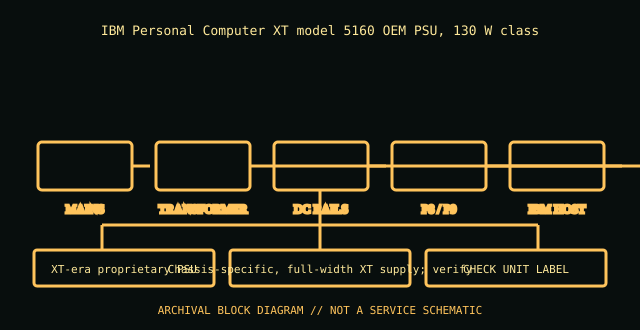

[ POWER CONVERSION // IDENTIFIED MODEL ]
IBM 5160 PC/XT 130 W power supply
IBM Personal Computer XT model 5160 OEM PSU, 130 W class. This record is bounded to the named unit, standard revision, or model family below; nearby model names and replacement parts are not presumed equivalent.

HIGH-VOLTAGE SAFETY: Unplug before external inspection. Never open a power supply. Dangerous voltage can remain inside after it is disconnected. Do not attempt internal repair; use qualified service or replace the unit.
Verified identity & specifications
| Catalog identity | IBM Personal Computer XT model 5160 OEM PSU, 130 W class |
|---|---|
| Form factor / era | XT-era proprietary PSU |
| AC input | IBM 5160 technical reference: line-frequency AC input; exact voltage/frequency/current are nameplate and region dependent. |
| DC output rating | The 5160-era label and IBM technical reference govern rail limits; 130 W is the supply rating class, not a guarantee for every OEM assembly. Do not infer rail amperage from wattage. |
| Mechanical envelope | Chassis-specific, full-width XT supply; verify mounting, depth, air path, and rear AC inlet against the actual 5160 case. |
| Connectors / interface | Proprietary motherboard harness; not ATX. Compare the pinout/polarity against the exact IBM/OEM manual before any replacement. |
| Revision differences | 5160 supplied OEMs and assembly labels varied; identify the maker, assembly number, and DC-output label rather than treating “130 W” as a universal revision. |
Compatibility & safe handling
- Match full model, suffix, region, revision and DC output label to the official documentation. Rated total watts alone do not establish rail or transient compatibility.
- Before replacement, confirm AC input range, rail current/combined limits, motherboard signaling and pinout, mechanical envelope, fasteners, cooling direction, and every required connector.
- Never open the PSU, defeat protective earth, or probe its internals. Do not energize a wet, cracked, corroded, burned, modified, or unidentified supply.
- Modular cable pinouts are not standardized at the PSU end. Use only cables expressly approved for this exact model/revision; matching plugs can have different wiring.
Model and revision notes
5160 supplied OEMs and assembly labels varied; identify the maker, assembly number, and DC-output label rather than treating “130 W” as a universal revision.
IBM PC/XT 5160 technical-reference scan; use its power-supply and system-board sections alongside the unit label.
Archival notes
Record the 5160 type/model, PSU label, OEM, date code, fuse/selector state, cable condition, and the technical-reference revision used. The schematic image is an original archival block diagram, not a service drawing.
Photograph the complete nameplate, assembly/model code, revision/date code, input selector if present, cable ends and mounting side. Separate observed label data from published specifications and preserve the referenced manual issue.
Manufacturer / standards references
- IBM PC/XT 5160 technical-reference scanIBM PC/XT 5160 technical-reference scan; use its power-supply and system-board sections alongside the unit label.
- Intel — ATX / ATX12V Power Supply Design GuideStandards reference for the ATX electrical/mechanical family; use the revision specified for the product. Historical IBM supplies are not ATX and must not be adapted on this basis.
The exact nameplate and corresponding manufacturer manual remain controlling for regional and hardware revisions.